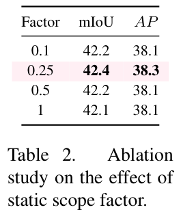

静态范围因子取值：0.1 → 42.2 mIoU / 38.1 AP；0.25 → 42.4 / 38.3（同时最优）；0.5 → 42.2 / 38.1。取更小或更大的值都会退化，可见 0.25 恰好落在重叠与不重叠的边界上。

| X / X′ | C×H1×W1 的低分辨率输入 / C×H2×W2 的上采样输出 |
| S | 2×H2×W2 的采样集，首维的 2 表示 x、y 坐标 |
| G / O | 标准规则采样网格 / 逐点生成的采样偏移 |
| s / g | 上采样倍率 / 通道分组数 |


静态范围因子 · LP 风格
动态范围因子 · LP 风格
静态范围因子 · PL 风格
动态范围因子 · PL 风格

在核范式视角下 DySample 等价于使用 2 × 2 双线性核，而 CARAFE 使用 5 × 5 核；且 CARAFE 若把核中心放在某点上，核尺寸至少要是 3 × 3，故其 GFLOPs 至少是 DySample 的 2.25 倍。CARAFE 的核权重需学习（要 K×K 通道特征图），DySample 的核权重由 x、y 位置决定（g=1 时只需 2 通道）。
SAPA 把上采样看作「为每个上采样点找到正确的语义簇」；DySample 的偏移生成同样可视为为每个点寻找语义相似的区域，但不需要引导图，因此更高效、更易用。
可变形注意力主要用于增强特征，在每个位置采样多个点再聚合成新点；DySample 专为上采样定制，每个上采样位置只采一个点，把一个点划分成 s² 个上采样点。